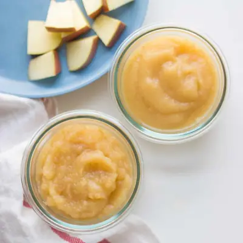

Homemade unsweetened applesauce

Ingredients
- 2 pounds apples, cored and roughly chopped (with peel on or removed)
- 3 teaspoons freshly squeezed lemon juice
- 1/3 cup water
- 1/4 teaspoon cinnamon (optional)
Steps
- Combine all the ingredients in a pot. Bring to a simmer, cover, and cook over low heat, stirring occasionally, until the apples are soft, about 15-20 minutes.
- Wait until the apples are cooled then transfer to the blender. Give it quick pulses for chunky applesauce. Blend until completely smooth for apple puree.
Recipe by Min Kwon · Kidfriendly Meals, from MJ and Hungryman. Saved here for personal use; the original has the full notes, tips and photos. Open original